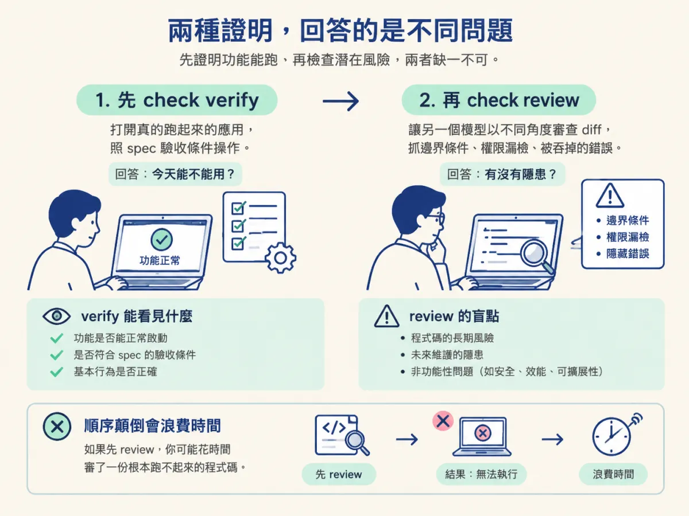
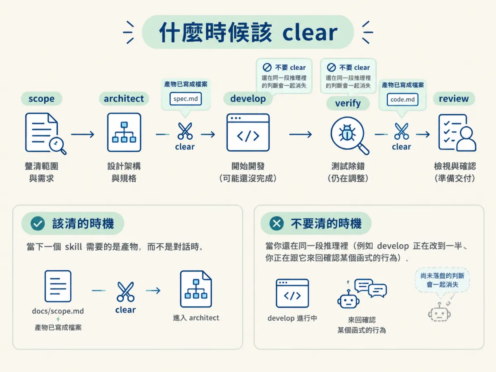
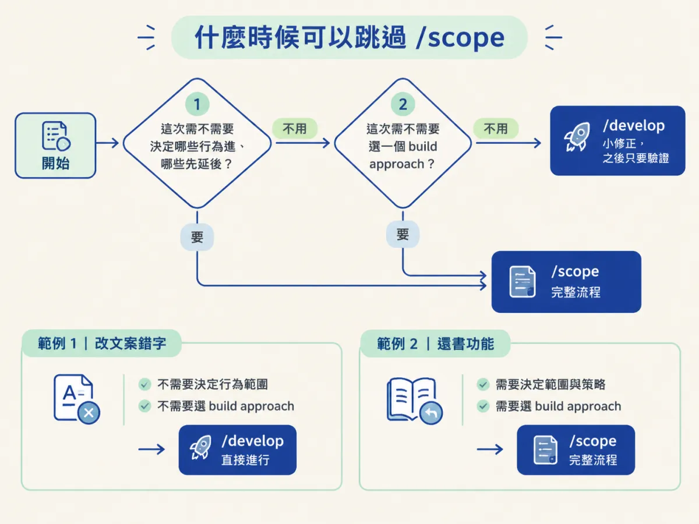
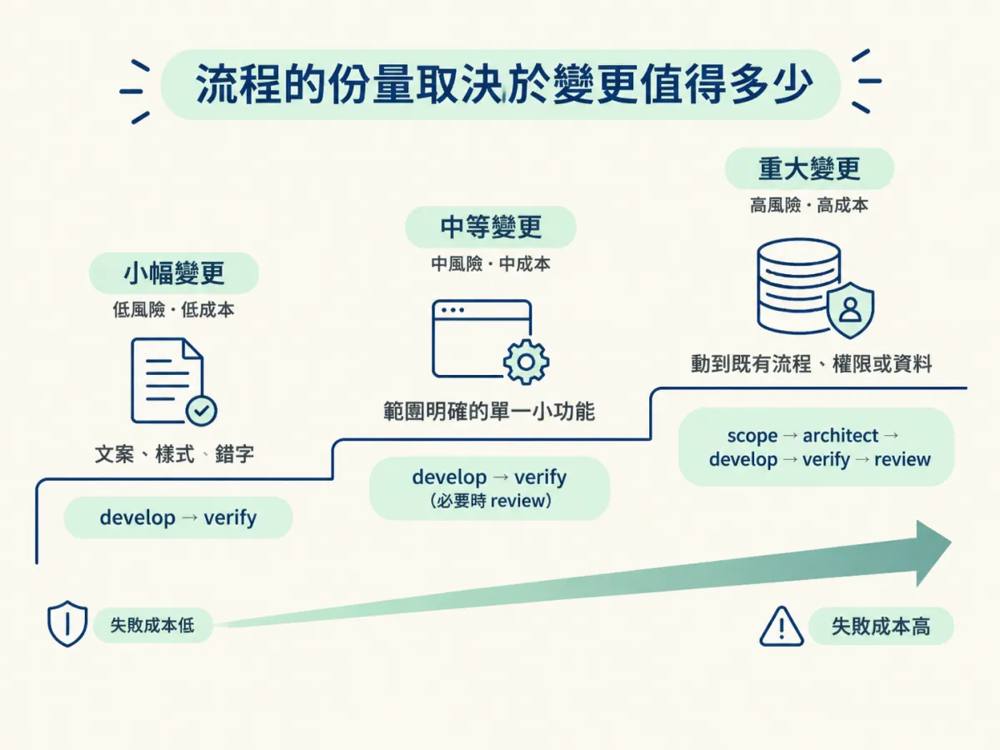

在舊碼庫的變更收尾時選對證明方式（先 check verify 再 check review）、判斷 skill 之間何時該 clear，並分辨哪種小修正可以跳過 /scope、哪種缺口必須退回 /architect。
還書功能做完了。型別過、lint 乾淨、diff 只有四個檔案，看起來可以交出去了。但你心裡其實有一個問題還沒回答：你怎麼知道原本在用的借書、審核、通知沒有被這次改動弄壞？
這個問題在舊碼庫特別難，因為「原本該有的行為」沒有一份完整清單。你改的是一個別人寫的流程，而那個流程可能有一些沒寫在文件裡、只有在真的操作時才會出現的行為。所以收尾不是按個送出，而是要選一種證明方式，並且知道這個證明能證明到哪裡。
這一節要處理三個收尾的判斷：用什麼證明、什麼時候該把對話清掉重來、以及什麼情況下可以少跑幾個 skill。
你在前面的節點看過 check verify：它回答的是「這個功能今天能不能用」。它會打開真的跑起來的應用，照著 spec 的驗收條件操作，確認行為符合承諾。它看的不是程式碼長得好不好，也不是測試有沒有綠，而是產品現在實際做什麼。
check review 回答的是另一個問題：「有沒有人用不同的角度看過這個 diff」。它讓另一個沒參與這次實作的模型，用不同的角度審查變更，抓的是那種「功能會動，但這樣寫有風險」的問題：邊界條件、權限漏檢查、錯誤被吞掉、兩個地方對同一件事有不同的假設。
兩者不能互相取代。verify 過了，不代表 review 沒有話說；review 過了，也不代表功能真的跑得起來。所以順序是固定的：先 verify，再 review。先用真的操作證明行為正確，再讓第二個視角看有沒有隱患。反過來做的問題是，你可能花時間審了一份根本跑不起來的程式碼。

# 收尾的順序（示範，功能名稱依實際 spec 替換）
check verify 還書
check review| 你要回答的問題 | 用哪個 | 它看什麼 | 它看不到什麼 |
|---|---|---|---|
| 這個功能現在真的能用嗎 | check verify | 跑起來的應用與 spec 的驗收條件 | 程式碼結構的長期風險 |
| 這個 diff 有沒有隱藏的風險 | check review | 變更內容與周邊假設，換一個視角 | 功能在真實環境是否可用 |
回到還書功能。這次變更碰到三件事：管理員權限、借閱紀錄的狀態、以及後台列表的渲染。這三件都屬於「壞掉會很明顯、而且會影響資料」的類型。在這種情況下，只跑 verify 不夠，因為 verify 只會測它知道的驗收條件；如果權限檢查漏了一個分支，或某個狀態轉換在併發時會出錯，驗收條件不一定涵蓋得到。
所以判斷是：先 check verify，確認管理員能歸還、狀態會更新、非管理員不能操作；再 check review，讓第二個視角看這次的四個檔案，特別是權限檢查放在對的地方、舊的 dummy 行為有沒有完全被取代。你接受了什麼代價？多花一輪時間，而且 review 可能提出一些「不是 bug 但可以更好」的意見，你得自己判斷哪些要跟。
現在把條件改掉：這次只是把一個按鈕的文字從「歸還」改成「還書」，沒有行為變更、沒有資料變動。這種情況下，check verify 就足以證明結果；check review 的邊際價值很低，因為沒有新的邏輯需要被質疑。判斷翻轉了，不是因為流程不重要，而是因為這次變更的風險結構不同。
如果條件不足以下判斷呢？例如你不確定這個按鈕背後有沒有藏一段邏輯。那就先讀那段程式碼，或直接跑一次 verify 看實際發生什麼；在還沒弄清楚之前，不要用「應該只是文案」來說服自己。
課程的示範裡，clear 出現在兩個固定的位置：scope 計畫完成、要進 architect 之前；spec 接受、要進 develop 之前。這兩個位置的共同點是：上一個階段的產物已經寫成檔案，下一個階段只需要讀那些檔案，不需要上一個階段的整段對話。
把這個觀察變成一條可操作的規則： 當下一個 skill 需要的是產物，而不是對話時，就 clear。相反的，當你還在同一段推理裡（例如 develop 正在改到一半、你正在跟它來回確認某個函式的行為），就不要 clear，因為那些還沒寫進檔案的判斷會一起消失。

| 時機 | 要不要 clear | 理由 |
|---|---|---|
scope 計畫寫進 docs/scope.md 之後，要進 architect | 要 | architect 只需要讀地圖、scope 與程式碼 |
| spec 接受、scope 更新之後，要進 develop | 要 | develop 會自己重讀周邊檔案，不需要 scope 的問答紀錄 |
| develop 改到一半，還在確認某個行為 | 不要 | 還沒落盤的判斷只存在對話裡 |
| verify 發現問題，正在判斷怎麼修 | 不要 | 你還在同一個除錯脈絡裡 |
注意最後一列：verify 或 review 找到問題時，通常會進到修正的循環。這時候清掉對話，等於把「為什麼會這樣」的推理丟掉，只剩下一個錯誤訊息。等修完、重新驗過，再考慮 clear。
課程說得很直接：如果你只是想加一個很小的功能，或改一行，通常會跳過 scope 直接進 develop；但比較大的功能，永遠從 scope 開始。後來又補了一句更精簡的版本：一個小修正可能只需要 develop 加上驗證。
A small correction may only require develop followed by the verification.
「小」的判準不是行數，而是這次變更有沒有需要做範圍決定。問自己兩個問題：
兩個答案都是「不用」，就可以直接進 /develop。只要有一個是「要」，就從 /scope 開始。用這個判準看示範：還書功能需要決定「這次只做還書、逾期延後」，也需要選 build approach，所以它走了完整的 /scope；而如果只是修一個文案錯字，兩個問題都不用回答，直接 develop 就好。

有時候你已經在 develop 階段，卻發現原本的 spec 少了一個重要決定。例如做到一半才發現：「咦，非管理員到底能不能發起還書？」這種問題不是實作細節，它會改變行為、權限與驗收條件。這時候正確的動作不是自己選一個，也不是讓 develop 猜，而是停下來，把工作送回 /architect。
課程的描述是：如果 develop 發現缺少一個重要決定，它會檢查並把工作送給 architect。這個回頭不是失敗，而是流程設計的一部分。舊碼庫裡最容易出事的，就是一個沒人做過的決定被實作階段默默做掉，然後變成一條沒人記得為什麼存在的規則。
反過來說，如果缺的只是一個實作選擇（例如變數要叫 returnedAt 還是 returnDate），那不需要退回 architect，照當地慣例選一個就好。分界線是：這個選擇會不會改變外部行為或驗收條件？會，就退回；不會，就自己做。
把前面幾個判斷收在一起，課程用一句話總結：
You use the amount of process that the change you're trying to make deserves.
這句話不是叫你偷懶，也不是叫你每次都跑全套。它說的是：流程是為風險服務的。一個文案修正不需要 scope、architect、review 全套；一個會動到權限與資料的流程，則值得每一步都走。判斷的依據是變更的影響面，而不是你今天有多少時間。

| 變更型態 | 建議流程 | 判斷依據 |
|---|---|---|
| 文案、樣式、明顯的錯字 | develop → verify | 不需要範圍決定，也不改變行為 |
| 單一小功能，範圍明確 | develop → verify（必要時 review） | 沒有新的取捨要決定，但仍要證明能用 |
| 會動到既有流程、權限或資料 | scope → architect → develop → verify → review | 需要決定範圍與落點，且失敗成本高 |
| develop 發現缺少重要決定 | 退回 architect，再繼續 | 這個決定會改變行為或驗收條件 |
收尾時先用check verify證明功能今天真的能用，再用check review換一個視角看 diff 的風險；順序不能顛倒，兩者也不能互相取代。clear 的時機是「下一個 skill 只需要產物、不需要對話」的時候，而不是每個階段結束就無條件清掉。小修正可以跳過/scope直接 develop 加驗證，判準是這次有沒有需要做範圍決定；如果 develop 發現缺少會改變行為的重要決定，就退回/architect。流程的份量，取決於這次變更值得多少。
走到這裡，你已經在一個陌生、別人寫的、正在被使用的專案上完成一輪：建地圖、驗地圖、規劃、最小變更、證明。這套順序可以搬到任何一個你沒寫過的程式庫；真正要帶走的不是指令名稱，而是那個反覆出現的原則。先理解既有的事物，再找最小的安全落點，最後證明改變了什麼、以及什麼沒變。